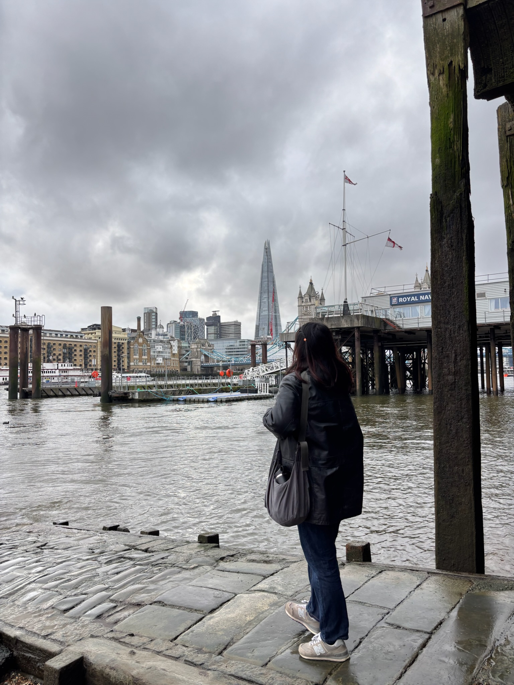

After spending my first year of college in London — living in a different country and exploring Europe — I had been waiting to go back ever since. This March, I returned with two close friends who were also in London with me freshman year and graduating in April, one of whom was my freshman year roommate.

We stayed at an Airbnb only a five-minute walk from where we lived freshman year, right near Spitalfields Market. Being back in a neighborhood I knew like the back of my hand felt surreal. We were surprised by how little had changed — many of our favorite restaurants and shops were still open. I was especially happy to see that Humble Crumble had moved into a bigger storefront, and their custards are still just as good.

Our old student housing only allows current residents inside, but I was lucky enough to know someone staying there over spring break. Getting back into the building brought everything rushing back — the lobby hadn't changed at all. I used to love sitting there on weekends, people-watching as everyone came back from a night out. The basement game room had been completely redone and was noticeably more modern, which I will admit I was a little jealous of.
Even so, we explored plenty and got to relive the city before my friends headed into graduation season. It was the perfect way to close out their college experience, and I know we made the right call going back. As I approach the end of my own college career, I feel lucky to have gotten to make new memories in a place I once called home.